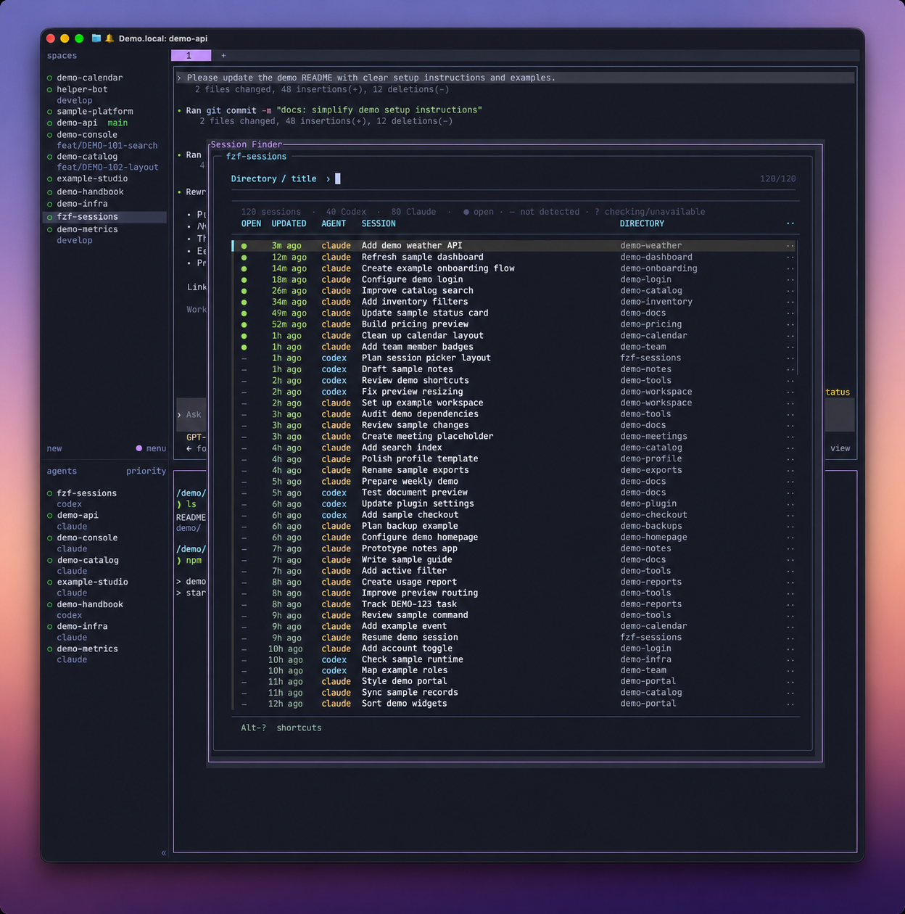

OPEN SOURCE
v0.2.0 ↗
Pick up where
Pick up where
you left off.
The conversation you need is in there somewhere. Find all your Codex and Claude Code sessions on your machine, and jump right back in.
6/6
No matching sessions.
Try “api” or switch search modes.
At home
in Herdr.
A floating finder over your workspace. Your open sessions, across tabs and workspaces, right at the top.
- See what's already open.
- Jump to the exact pane.
- Refresh without starting over.
Prefer a regular terminal? Works there too.


Install fzf-sessions
herdr plugin install christianblessing-me/fzf-sessions
herdr plugin action invoke fzf-sessions.open
Install once. Then bind fzf-sessions.open to a key
in your Herdr config.
git clone
https://github.com/christianblessing-me/fzf-sessions.git
cd fzf-sessions
python3 install.py
export PATH="$HOME/.local/bin:$PATH"
fzf-sessions
Already have fzf? You're almost there. Check your setup with
fzf-sessions --doctor.